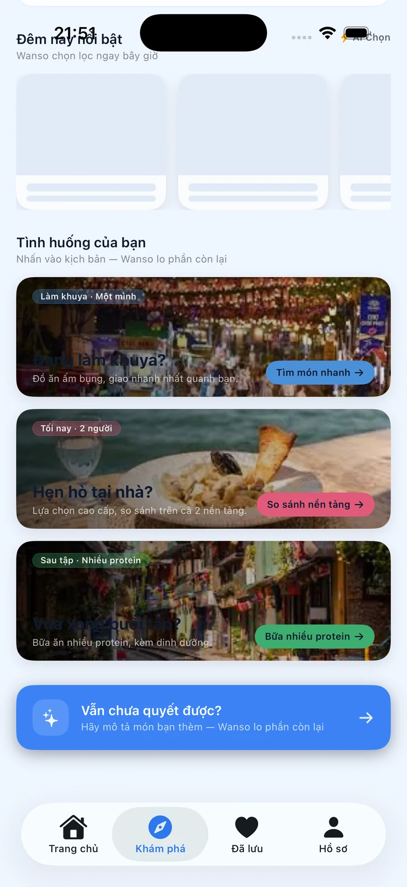
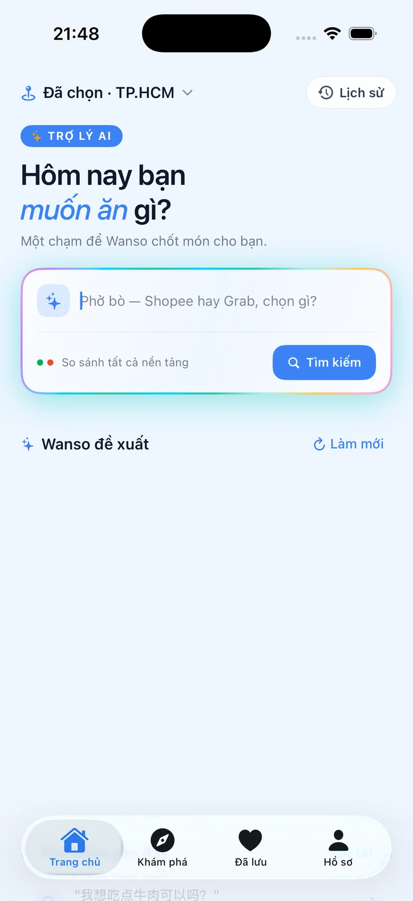
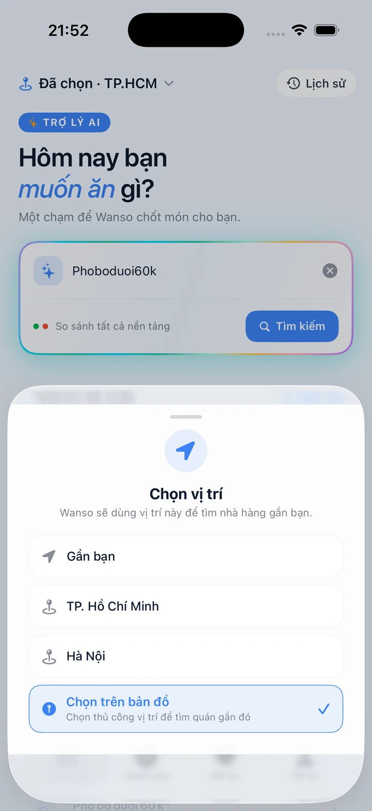

项目背景
午休时，用户其实要做两次选择
越南的上班族和学生要在口味、预算和配送之间权衡。拆解 GrabFood、ShopeeFood 的流程时，我发现直接比较店铺标价会掩盖份量、运费和优惠差异。连菜品都没选定时，低价很难帮助用户下决定。
我的判断
先缩小选餐范围，再对齐比较条件
- 让本次意愿优先
当用户说“不吃鸡”，即时忌口优先于历史偏好。我用候选餐厅、餐厅 ID 校验和菜单价格回填来约束输出。
- 拆开餐费与到手价
追问换饮品时先重算餐费。只有进入同店同份量的比价场景，才把运费、折扣上限和送达时间一起展示。
- 限定首期交付边界
首期由 Wanso 承接推荐、比价与平台跳转。支付留在第三方。订单回传和归因是验证商家抽佣的前提。
推荐候选与缺失价格验收规则
缺少菜单时优先展示有菜单的候选，并说明可去平台查看。
预算与连续追问验收规则
保留已经选好的菜品和预算，在替换饮品后重新计算。
交互原型
跟着越南语原生界面走一次
我在 iPhone 17 Pro 模拟器运行本地 Wanso iOS 应用，录下探索页的真实滑动。你可以上滑看用餐场景、切回选餐首页，再点 TP.HCM 打开位置选择。




上滑手机查看用餐场景。点底部 Trang chủ 回到选餐首页。
原生探索页中的加班、双人晚餐和健身餐场景。向下滑回顶部。
点左上角 TP.HCM 查看城市选项，或点底部 Khám phá 打开探索。
点抽屉上方收起位置选择，回到选餐首页。
这次试搜预算内的牛肉粉时，应用返回了重试提示。下方保留原作品集中的推荐与结算设计，供对照需求验收。
作品集原型与费用试算
试算两家平台的到手价
按原型的活动条件，Grab 免配送费；Shopee 运费 12,000，餐费打八五折，最多减 15,000。
GrabFood 便宜 3,000 ₫。
演示测算，最终金额以平台结算为准。效果验证
三轮内测中，选店任务完成率从 75% 升至 93.8%
我围绕选店、预算约束、多语言和连续追问记录失败原因，改动后再回归。三轮各收集 50 份五分制问卷，将 4–5 分答卷计入满意。
这些数据支持继续打磨选餐决策流程。真实成交转化和商家收益仍需订单回传验证。
产品路线图
从验证选餐到验证成交
- 已交付
选餐与平台跳转
完成需求文档、Figma 原型、验收标准，协助 Android 与双端联调。
- 已验证
推荐规则回归
用三轮内部任务复核预算、忌口和连续追问，把失败用例纳入回归。
- 待验证
订单归因与商家结算
先确认平台能回传有效订单，再区分退款及重复回传，验证按成交收费的可行性。